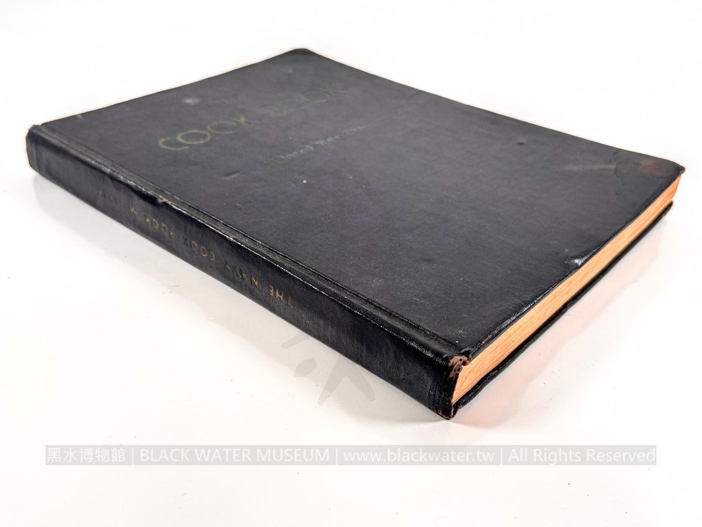

ShimoKaze
@wind_dmr
RT @Black_Water_M: 🍞【二戰美國海軍怎麼一次煮100人份？答案就在這本1944年的軍用食譜裡】
如果軍艦上一次要供應數百人吃飯，食譜就不能只寫「鹽少許、奶油適量」。
黑水博物館這次登錄的，是民國33年(1944)美國海軍《The Cook Book of…

Black Water Museum
@Black_Water_M
🍞【二戰美國海軍怎麼一次煮100人份？答案就在這本1944年的軍用食譜裡】
如果軍艦上一次要供應數百人吃飯，食譜就不能只寫「鹽少許、奶油適量」。
黑水博物館這次登錄的，是民國33年(1944)美國海軍《The Cook Book of the United States https://t.co/YBJlEPMT11